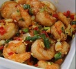
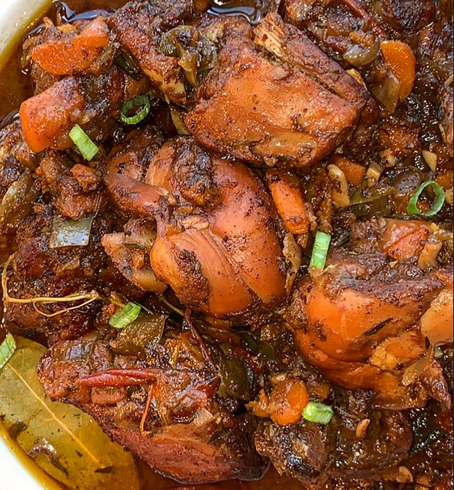
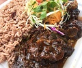
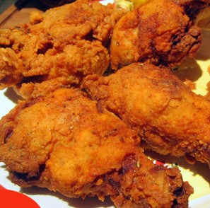
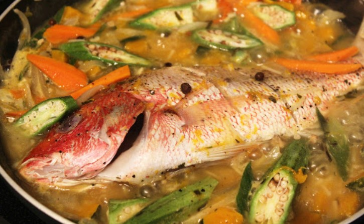
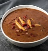
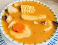
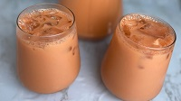
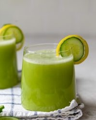

Jamerican Restaurant
Enjoy Unique Flavor With A Deliciouse Mix Jamaican And American Food
View the Menu
Jamerican Restaurant
1319 Cypress Creek Pkwy #100
Houston, TX 77091
Phone 281.781.8710
Breakfast
- Ackee and Saltfish ($8)
- Jamaican's National Dish, A combination of Ackee and Saltfish cooked with onions, tomatoes, and sweet peppers
- Callaloo and Saltfish
- A Jamaican staple food, A mix of leafy green's (Callaloo) and saltfish
- Cornmeal Porridge
- A deleciouse mix of cornmeal and milk. spiced with cinnamon and nutmeg, and sweetened to taste
- peanut Porridge
- Porridge made from raw peanut, milk, water along with aromatic spices and variouse incredients to sweeten to taste
Sides & More
- Rasta Pasta
- A colorful pasta dish made with a variety of Caribbean seasonings along with shrimp
- Baked Macaroni
- Macaroni Baked with dos quesos and imported jamaican cheese
- Fries
- Fresh fries with classic seasonings, perfect for any meal
Main Courses
-

- Carribean Shrimp
- Stir-fried shrimp seasoned with a deleciouse mix of imported carribean spices 
- Stew Chicken
- Caramelized chicken cooked with sweet peppers, onions, and fresh tomatoes 
- Oxtail
- Caramelized oxtail, maranated and cooked fresh with tomatoes, carrots, and onions 
- Fried Chicken
- Crunchy fried chicken seasoned with a mix of carribean spices 
- Steamed Fish
- Red Snappers marrinated in carribean seasonings and steamed with fresh Vegetables
All Main Dishes Are Served With A The Rice Of Your Choice, And Vegetables Don't Forget To Ask us for todays soup
Would you like us to cater your event? Call us & Prices range from $60-$120+ 346.317.6591
Close
Soups
-

- Red Bean Soup
- A hearty mix of red kidney beans made with fresh dumplins and local ingredients. 
- Chicken Soup
- A Deleciouse mix of fresh vegetables and chicken along with imported jamaican seasonings
- Fish Soup
- A classic mix of fresh Vegetables cooked with fresh fish broth
Natural Drinks
-

- Carrot Juice
- A deleciouse blend of carrots, water, condensed milk. and more. & honey 
- Cucumber & Lemon Juice
- Freshly ground cucumber and ginger combined with lemon to create a deleciouse hydrated drink.
Soft Drinks Are Served Upon Request Ask Your Waiter For More Options